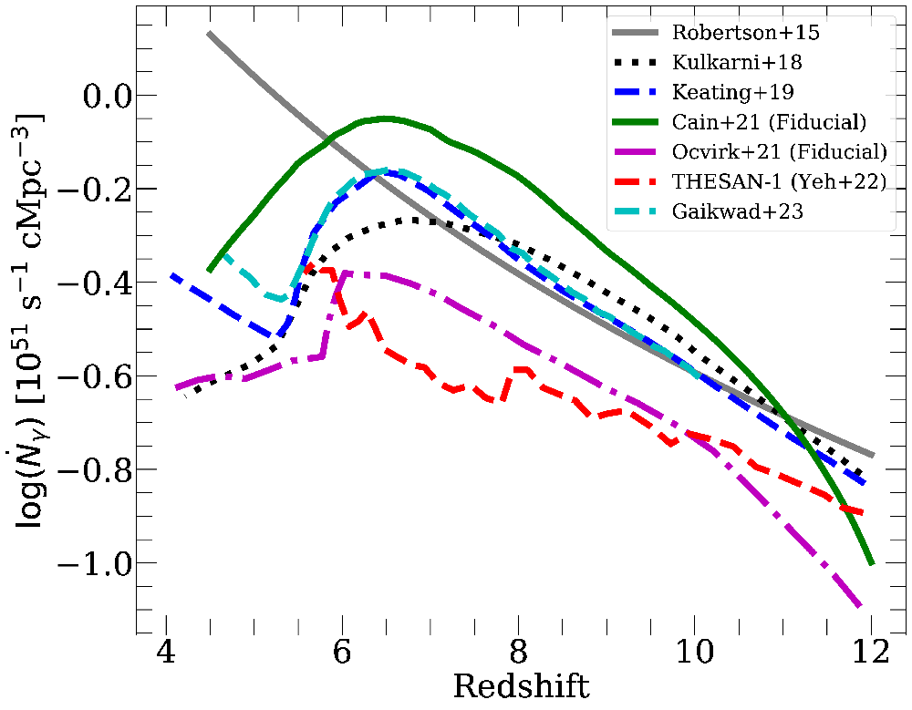
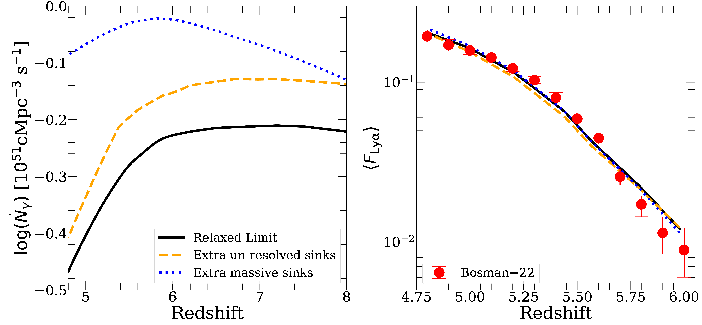
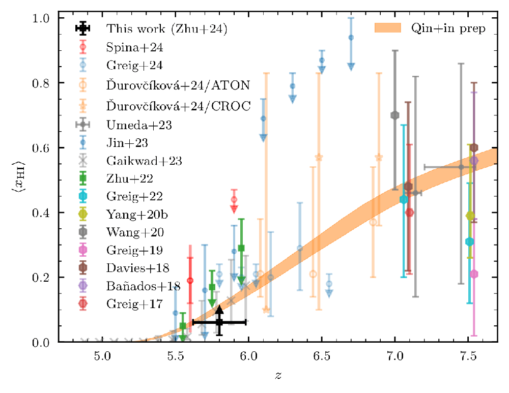
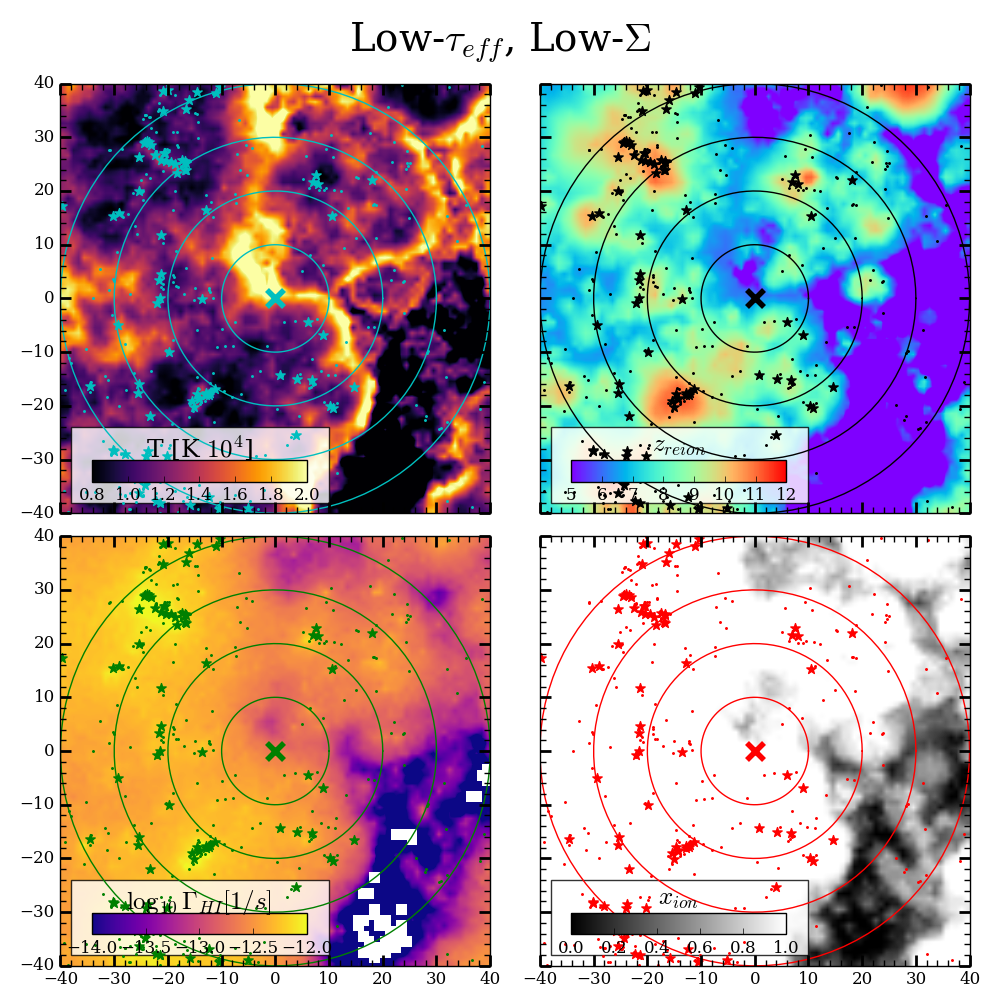
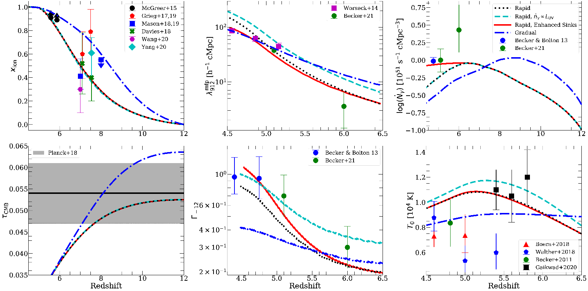
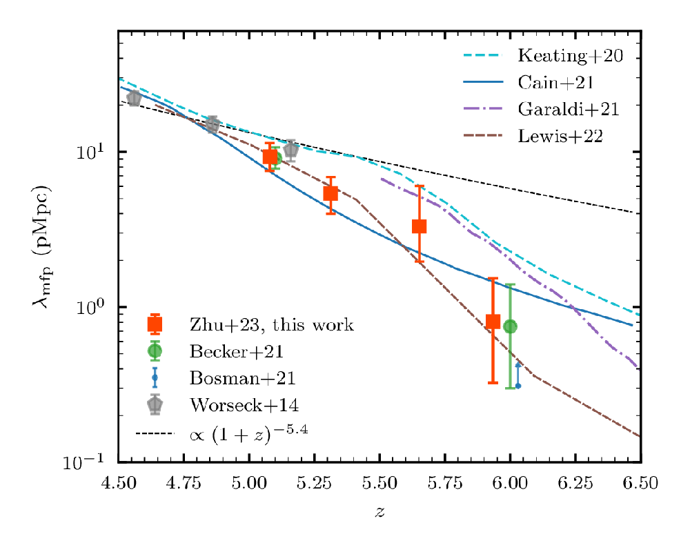
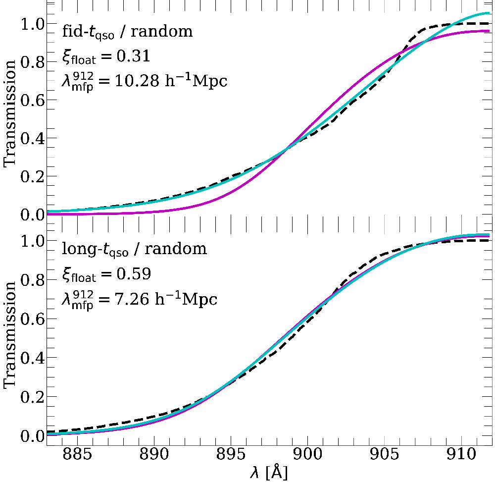
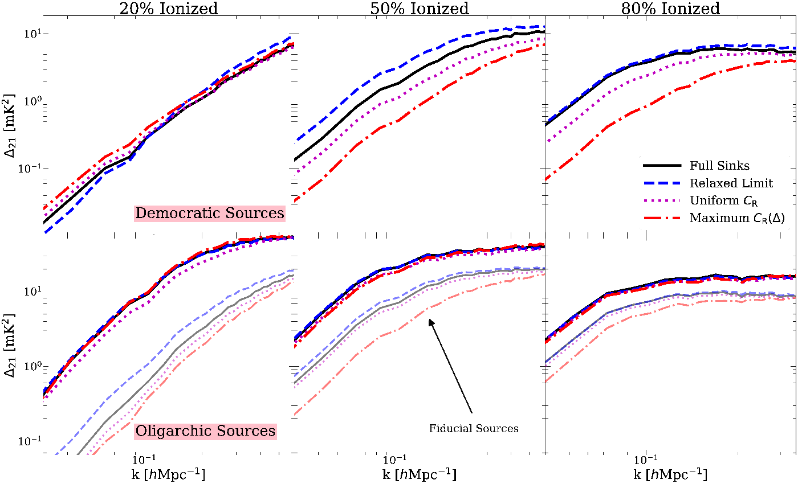

Properties of High-Redshift Galaxies
In the past two years, JWST has revolutionized our understanding of high-redshift galaxies. Within this short time, it has allowed us to take a census of the galaxy population deep into reionization for the first time. Among other things, it has also facilitated measurements of the intrinsic ionizing efficiency - the production rate of ionizing photons per non-ionizing photons - in large samples of galaxies up to z = 9. Taken together, these measurements provide a crucial window into the ionizing properties of the galaxies that likely drove the reionization process.
Historically, it has been challenging to explain how galaxies could generate the required ionizing output to complete reionization, given their fairly low ionizing efficiencies and escape fractions measured at much lower redshifts. However, it was recently pointed out (Munoz+24) that recent JWST measurements at z > 6, combined with reasonable expectations for escape fractions at high redshift, may suggest that galaxies produced too many ionizing photons, which would cause reionization to end too early.


The top panel of the image on the left shows three representative reionization histories, the properties of which I studied recently in Cain+24. The blue dot-dashed curve starts reionization early (z ~ 13) and ends early (z ~ 8), and is consistent with the fiducial model proposed in Munoz+24. However, this model is in tension with the Lyman alpha forest, which requires a z < 6 end to reionization. The other two are alternatives that end reionization at z < 6 - one that starts early (red dashed curve) and another that starts late (black solid curve). The bottom curve shows their CMB optical depths, compared to recent measurements. The second image on the left plots the escaping ionizing efficiency - the total ionizing emissivity divided by UV luminosity density - required by each of these models. The gray dashed curve shows the model of Munoz+24, with which the blue dotted curve agrees (by construction). The black curve (late start/late end) is scales down the blue curve by a factor of 5 at all redshifts, and produces a reionization history that agrees well with the Lyman alpha forest. By contrast, starting reionization early at z ~ 13 but still ending late requires a scenario like the red dashed curve, which has an order of magnitude evolution in escaping ionizing efficiency between z = 10 and 6. Such evolution would require significant changes in the physical characteristics of galaxies during this period, motivating a thorough investigation of reionization's early stages.
In the remainder of that study, we investigated the compatibility of our late-ending models with a wide variety of reionization probes, in an effort to determine whether a late or early start to reionization is favored by current observations. We found that none of the observables we looked at could conclusively distinguish between the scenarios, but that collectively the data displays a mild preference for a late start. This study motivates efforts to synergize information across many observables to constrain reionization.
The Lyman-alpha forest
The Lyman-alpha forest of high-redshift quasars is one of, if not the most powerful observable we have at present to constrain the progress of reionization. Nearly a decade ago, the forest provided the first evidence that reionization may not have completely ended by z = 6 (Becker+15), and subsequent studies have supported this view from a number of angles. Today, numerous studies have characterized relationship between forest statistics and the progress of reionization, approaching a consensus picture of reionization's ending stages. I have led or been involved with several works on the forefront of interpreting forest observations.


I recently led a study, Cain+24, that sought to explain a puzzling feature of most reionization simulations that reproduce observed forest properties at z < 6. The image to the left shows the integrated ionizing emissivity from galaxies in several simulations that reproduce the evolution of the mean transmission in the forest, the evolution of the MFP, or both. The gray curve is a model based on high-redshift galaxy observations. A curious feature in the simulation results that is not suggested by galaxy observations is a rapid decline in emissivity at z < 6, just when reionization is ending. Such a drop would demand rapid decline in the ionizing effeciency of galaxies over a time period of a few hundred Myr, at a time when the number of galaxies is rapidly growing. We investigated whether this drop is likely to be a physical effect, or if it could be an artifact resulting from deficiencies in modeling the physical conditions of the IGM in simulations.


We investigated a number of possible physical effects that, if modeled incorrectly, could cause the drop. The image on the left compares the emissivity (left) and the mean transmission of the forest (right) for a reference model (black curve) and two models that add extra ionizing photon absorbers (sinks) to the IGM. The first (orange dashed curve) presumes that small, hard-to-resolve sinks are missing from the simulations, and the other (blue dotted curve) assumes that the opacity originating from massive halos is under-estimated. Only the third model lacks a significant decline in emissivity at z < 6 - indeed, this was the only effect we found could (at least partially) alleviate the need for evolution in galaxy ionizing properties. These findings indicate that such evolution is likely to be, at least in part, a physical effect, and motivate further exploration of possible mechanisms to explain such evolution.


Just this year, the forest produced the first direct evidence for the presence of "islands" of neutral hydrogen below z = 6. This was accomplished through the detection of damping wing signatures in the forest - which could only be produced by the presence of fully neutral hydrogen. In Zhu+24, these signatures were detected by stacking the Lyman alpha transmission profiles around the edges of "dark gaps" in the Lyman beta forest - regions with no detectable transmission that could be caused by neutral islands. I aided this study by providing results from FlexRT simulations that could be used to interpret the damping wing measurements. The figure on the left shows the lower limit on the neutral fraction at z = 5.8 resulting from this study, which shows that reionization ended at z < 6.


I also aided a recent theoretical study of the relationship between Lyman alpha forest opacity and galaxy density at z < 6, Gangolli+24. In this study, we looked into the physics that determines this relationship, and whether it can be used to constrain reionization and galaxy ionizing properties. We also sought to interpret recent measurements of the opacity-density relation which suggested, in contrast to most models, the most opaque and transmissive sightlines in the forest both intersect galaxy under-densities (Christenson+23). The image on the left shows the physical properties around a low-opacity sightline intersecting a galaxy under-density (clockwise from top left: temperature, ionized fraction, photo-ionization rate). Our findings suggest that the observations are most consistent with a late-ending reionization scenario, and are relatively insensitive to the clustering properties of the sources.
The Mean Free Path
The mean free path (MFP) is the average distance that an ionizing photon can travel through the IGM before being absorbed by a neutral hydrogen atom. It directly probes the opacity of the IGM to ionizing photons, and during reionization is sensitive to the distribution of surviving neutral regions. The MFP can be directly measured using the Lyman continuum spectra of high-redshift quasars. An unexpectedly low measured MFP at z = 6 by Becker+21 seemed to support the notion, already hinted at by Lyman alpha forest studies, the reionization was ongoing at that redshift. I led a follow-up study in Cain+21 that used my new RT code, FlexRT, to answer the question of which reionization scenarios were preferred by the new measurement. The image below compares the properties of several reionization models we considered, clockwise from upper left: the reionization history, MFP, ionizing emissivity, CMB optical depth, photo-ionization rage, and temperature at mean density.


Our main finding was that the short MFP favors a scenario in which reionization ended late and rapidly, and was driven by faint galaxies. This can be seen by comparing the black dotted curve to the cyan and blue curves. The red curve shows a model in which enhanced IGM opacity at z < 6 enables agreement with z = 5 MFP measurements without the need for a decline in emissivity at z < 6 (see above for a follow-up study on this point).


I have also been involved in follow-up efforts to obtain a more complete set of MFP measurements at 5 < z < 6. Recently, Zhu+23 re-measured the z = 5 and 6 MFP, and provided new measurements at z = 5.3 and 5.6, using a expanded sample of high-redshift quasars from the XQR-30 survey. The top image on the right shows these new measurements alongside several models from the literature. The measurements are consistent with a steadily declining MFP from z = 5 to 6, and provide increased support for scenarios in which reionization ends at z < 6.


In a follow-up study (Roth+24), led by an undergraduate at UC Riverside, we investigated the effect of ongoing reionization on the fidelity of the measurements themselves. These measurements are particularly challenging at z ~ 6, when the size of the quasar proximity zone becomes larger than the MFP itself - this necessitates modeling the quasar. The bottom image on the left shows fits to the Lyman continuum transmission profiles of high-redshift quasars using the model of Becker+21, which does not explicitly account for the presence of neutral islands. The panels show results for two different assumed quasar lifetimes - an important parameter when neutral gas may be close to the quasar when it turns on. Perhaps surprisingly, our main finding was that the Becker+21 model does a reasonably good job of recovering the true MFP even when islands are present. This indicates that measurements at z > 5 can be reasonably interpreted as a signature of ongoing reionization.
21 cm Cosmology


The redshifted cosmological 21 cm signal from neutral hydrogen is a powerful forthcoming probe of reionization and cosmic dawn. During reionization, the power spectrum of the 21 cm signal can provide valuable information about reionization's history and spatial morphology (sizes and shapes of ionized regions). 21 cm experiments such as the Hydrogen Epoch of Reionization Array (HERA) are currently pursuing a detection of this signal. In Cain+22, I studied the effects of IGM absorption on reionization's morphology, and its interplay with the effects how the ionizing sources cluster in space. The image on the left shows the 21 cm power spectrum for several combinations of models for absorption by the IGM and source clustering. The rows, from left to right, show results when the IGM is 20%, 50%, and 80% ionized by volume. The different colors/line styles denote different models for the IGM absorption, and each group of curves denotes a different model for the sources. The "democratic" and "oligarchic" models are scenarios where reionization is driven by the faintest (least clustered) and brightest (most clustered) galaxies, respectively. The differences between different IGM models are much larger in the former case than the latter, implying that the importance of IGM absorption for reionization's morphology is sensitive to the clustering properties of the sources.